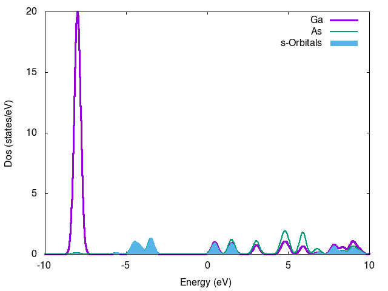

Quantum-ESPRESSO workshop
Table of Contents

Table of Contents
INTRODUCTION TO LINUX
Some basic commands
| ls | directory listing |
| ls -al | formatted listing with hidden files |
| cd dir | change directory to dir |
| cd | change to home |
| pwd | show current directory |
| mkdir dir | create a directory dir |
| rm file | delete file |
| rm -r dir | delete directory dir |
| rm -f file | force remove file |
| rm -rf dir | force remove directory dir * |
| cp file1 file2 | copy file1 to file2 |
| cp -r dir1 dir2 | copy dir1 to dir2; create dir2 if it doesn't exist |
| mv file1 file2 | rename or move file1 to file2 if file2 is an existing directory |
| ln -s file link | create symbolic link link to file |
| touch file | create or update file |
| cat > file | places standard input into file |
| more file | output the contents of file |
| head file | output the first 10 lines of file |
| tail file | output the last 10 lines of file |
| tail -f file | output the contents of file as it |
Bash scripting (for and while loops)
- Example 1. For Loop
for i in {1..10}; do echo $i ; done
- Example 2. While loop
ls > list
while read -r var ; do echo $var ; done < list
Fisrt calculation
Excercise 1. (INPUT file)
- getting exp or computed structure from online databases
- generating input files using easy tools
- visulizing them using xcrysden, VESTA, gdis, or ase-gui …
SCF and convergency test for GaAs
In this exercise we will first perform simple scf (self-consistent field) calculations on GaAs structure
- STEP 1. Use Xcrysden to view the structure of input file and explore different utilities
- STEP 2. Open and read the input file GaAs.scf.in
Note that in the &control namelist, we have specified that we want to run an scf calculation.
GaAs has the diamond structure. Note that we are using a (primitive) unit cell that corresponds to an fcc lattice, with 2 atoms in the atomic basis.
Notice the values given for ibrav, nat, ntyp and ATOMIC-POSITIONS.
In this file, the lattice constant celldm(1) has been set equal to 10.86626 bohr, which is the experimental value.
A 2×2×2 Monkhorst-Pack k-point mesh. has been used.
The plane-wave cut-off for wavefunctions, ecutwfc, has been set to 30 Ry. Since we are not using an ultrasoft pseudopotential.
- STEP 3. Run your input using following command
♠ Hands on
cd ~/WORKSHOP_QE/BULK/SECTION-SCF
xcrysden --pwi GaAs.scf.in
pw.x < GaAs.scf.in | tee GaAs.scf.out
STEP 4. How to extract data from output file?
For total energy:grep ! GaAs.scf.out
For Total Force:grep Total force GaAs.scf.out
For #electron :grep "of electrons " GaAs.scf.out
Whts is the number of electrons? and Why?
read first lines of your pseudo files !!!
- STEP 5. Covergency test for K-points and ecutwf
In this step write a simple script Kloop.sh (k-mesh) and ecutloop.sh (ecut) to run scf per different values of k-points and ecut
Plot a Physical quantity vs. variables and find converhency limit for your data
At the first step one can plot total energy vs. above variables:

*Is there any better quantity for convergency test???
Cell and atomic position relaxation
The Murnaghan equation is derived, under certain assumptions, from the equations of continuum mechanics.
It involves two adjustable parameters: the modulus of incompressibility K0 and its first derivative with respect to the pressure, K'0,
both measured at ambient pressure.
In general, these coefficients are determined by a regression on experimentally obtained values of volume V as a function of the pressure P.
These experimental data can be obtained by X-ray diffraction or by shock tests. Regression can also be performed on the values of the energy as a
function of the volume obtained from ab-initio and molecular dynamics calculations
The Murnaghan equation of state is typically expressed as:
STEP 1. calculate Energy vs Volume
cd ~/WORKSHOP_QE/BULK/OPTIMIZATION/E-V
#openev.shand change it
#execute the shell
sh ev.sh
#open ev.data file
#plot Energy vs volume using gnuplot
Post-Processing
pp.x code
The code performs two steps:
(1) reads the output produced by pw.x, extracts and calculates
the desired quantity/quantities (\(\rho\), V, …)
(2) writes the desired quantity to file in a suitable format for
various types of plotting and various plotting programs
generated data files can be visualized by xcrysden, VESTA, …)
Post-Processing I (Charge, Electrostatic Potential)
- After a SCF calculation we can make an input for post processing,
for A 3D charge visualization take alook at GaAs.rho.in
- there are two /namelist/s;
&inputpp : calculate a quantity
&Plot ; prepare data for visualization
XCRYSDEN:various 2D (isolines/colorplanes) and 3D (isosurfaces) plots (charge density, charge density difference, electrostatic potential)
♣ Hands on
cd ~/WORKSHOP_QE/BULK/GAAS_PP/CHARGE
pw.x < GaAs.scf.in | tee GaAs.scf.out
pp.x < GaAs.rho.in | tee GaAs.rho.out
xcrysden --xsf GaAs.rho.xsf
VESTA GaAs.rho.scf
Post-Processing II ( Dos and Projected Dos)
In this session we will analyse density of state and its projection over atomic orbitals
- set the energy range for dos calculation, what is Emin Emax
- Calculate Dos with/without nscf what is the difference?
- Integrate Dos from -\infinity to Fermi energy (Is that electron numbers?)
♦ Hands on
cd ~/WORKSHOP_QE/BULK/GAAS_PP/DOS
pw.x < GaAs.scf.in | tee GaAs.scf.out
dos.x < GaAs.dos.in | tee GaAs.dos.out
pw.x < GaAs.nscf.in | tee GaAs.nscf.out
dos.x < GaAsnsf.dos.in | tee GaAsnsf.dos.out
Projected Density of states
Purpose of projwfc.x:
projects wavefunctions onto orthogonalized atomic wavefunctions,
calculates Lowdin charges, spilling parameter, projected DOS
(separated into up and down components for lSDA)
alternatively, computes the local DOS(E), integrated in volumes
given in input
Structure of the input data:
==========================
&PROJWFC
…
/
♣ Hands on
cd ~/WORKSHOP_QE/BULK/GAAS_PP/PDOS
pw.x < GaAs.scf.in | tee GaAs.scf.out
projwfc.x < GaAs.pdos.in | tee GaAs.pdos.out
sumpdos.x GAASpdos.pdos_atm#1* > atoms1.pdos
sumpdos.x GAASpdos.pdos_atm#2* > atoms2.pdos
sumpdos.x GAASpdos.pdos_atm#*wfc*s* > sorbitals.pdos
Edit your gnuplot script, for example plotpdos.dat
gnuplot plotpdos.dat
